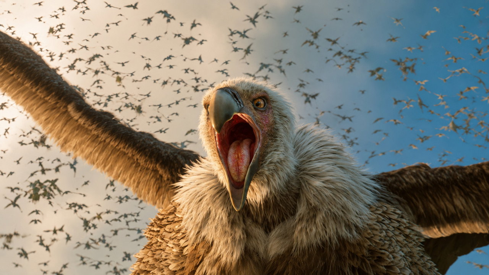
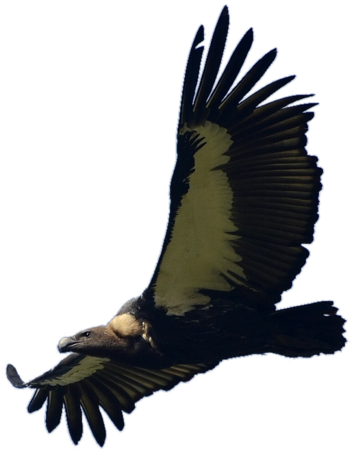
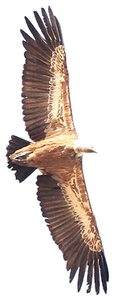
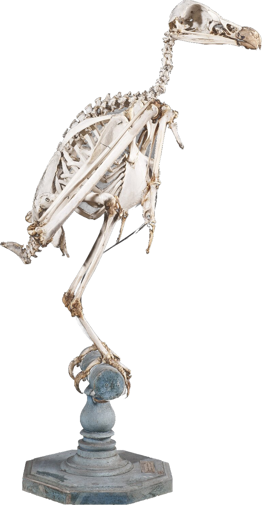
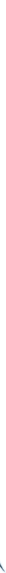
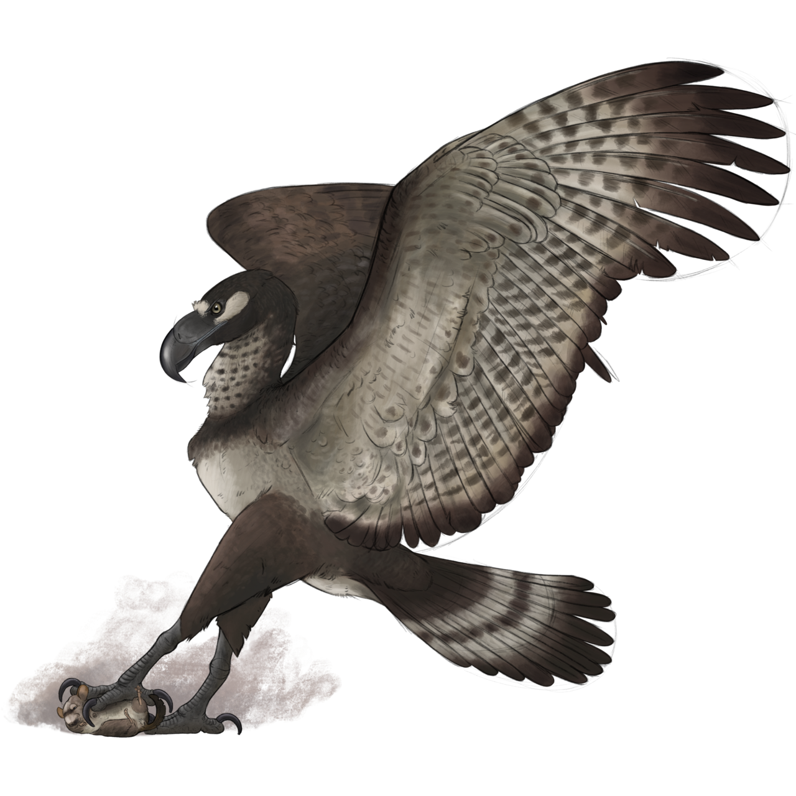

Ramayana · Part 1 · Jatayu
Itna bada pakshi
ud bhi sakta hai?
film still© Prime Focus Studios · DNEG · via TMDB
Film mein Jatayu ne Ravan ka rath tod diya.


Asli Gidh · Gyps bengalensis
Pankh 2.5 metre.
Vazan sirf 6 kilo.
wingspan2.2 – 2.6 m
weight5.5 – 6.3 kg
real photo: P. Jeganathan · CC BY-SA 4.0 · real sky: Poly Haven, CC0
Aur asli gidh, aaj bhi hamare aasmaan mein udta hai.

1
3
2
Khol ke dekhte hain
Haddiyan khokhli.
Dhaancha sirf 5%.
2 · flight muscle~25% of body weight
3 · hollow bonesskeleton ≈ 5% of weight
1 · featherbarbs zip together
skeleton: Natural History Museum, Univ. of Pisa · CC BY-SA 4.0 · macro photos credited in caption
Andar se khokhli, par beech mein tirchhi pattiyan.


Sabse bhaari udne wale
Itihaas ka sabse
bhaari: 70 kilo.
vulture6 kg · 2.5 m
albatross~12 kg · 3.5 m
argentavis · 6 million yrs ago~70 kg · ~6 m wings
reconstruction: Trost1702, CC BY-SA 4.0 · sizes are estimates
Aur itihaas ka sabse bhaari, Argentavis.